01 · Core Agentic
Kích thước đầy đủVăn bản trên trang
Primitive AI
Core
Agentic
AI tự suy luận, lập kế hoạch
và thao tác ngay trên hệ thống
doannt@primitives-ai.com
primitives-ai.com
Ngày tạo · 23/11/2026

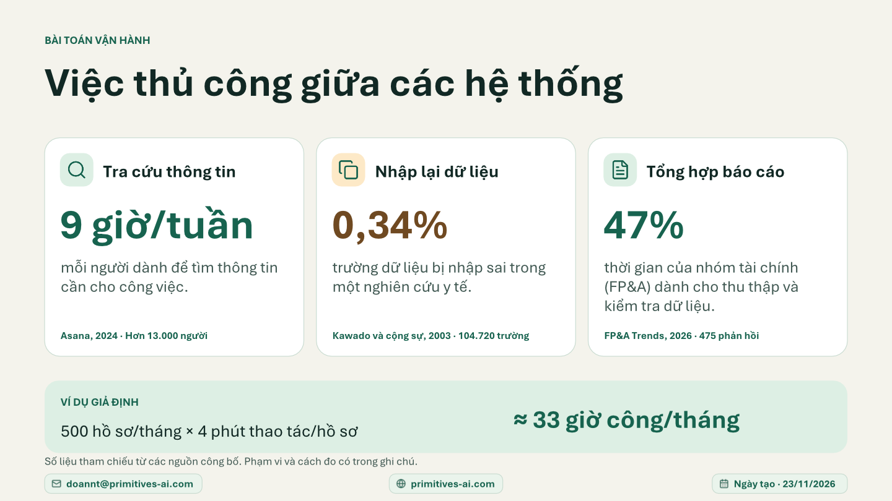
02 · Việc thủ công giữa các hệ thống
Kích thước đầy đủVăn bản trên trang
BÀI TOÁN VẬN HÀNH
Việc thủ công giữa các hệ thống
Tra cứu thông tin
9 giờ/tuần
mỗi người dành để tìm thông tin cần cho công việc.
Asana, 2024 · Hơn 13.000 người
Nhập lại dữ liệu
0,34%
trường dữ liệu bị nhập sai trong một nghiên cứu y tế.
Kawado và cộng sự, 2003 · 104.720 trường
Tổng hợp báo cáo
47%
thời gian của nhóm tài chính (FP&A) dành cho thu thập và kiểm tra dữ liệu.
FP&A Trends, 2026 · 475 phản hồi
VÍ DỤ GIẢ ĐỊNH
500 hồ sơ/tháng × 4 phút thao tác/hồ sơ
≈ 33 giờ công/tháng
Số liệu tham chiếu từ các nguồn công bố. Phạm vi và cách đo có trong ghi chú.
doannt@primitives-ai.com
primitives-ai.com
Ngày tạo · 23/11/2026

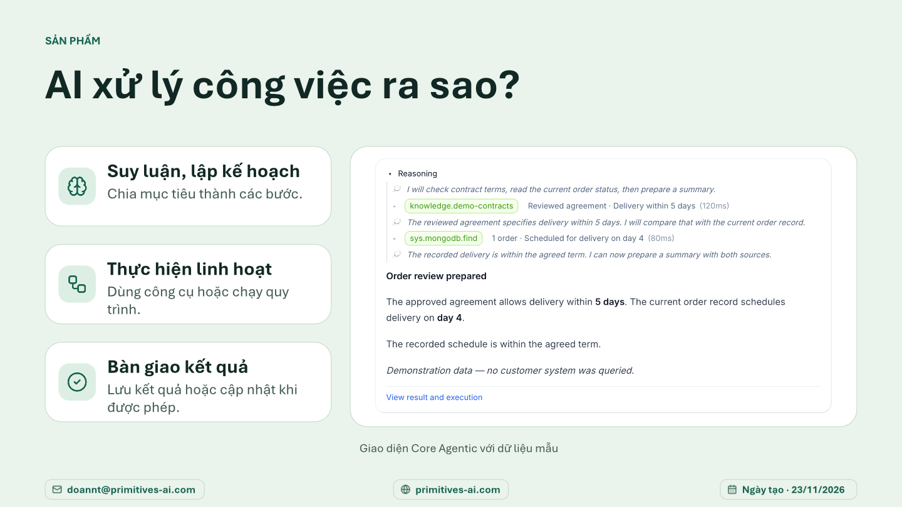
03 · AI xử lý công việc ra sao?
Kích thước đầy đủVăn bản trên trang
SẢN PHẨM
AI xử lý công việc ra sao?
Suy luận, lập kế hoạch
Chia mục tiêu thành các bước.
Thực hiện linh hoạt
Dùng công cụ hoặc chạy quy trình.
Bàn giao kết quả
Lưu kết quả hoặc cập nhật khi được phép.
Giao diện Core Agentic với dữ liệu mẫu
doannt@primitives-ai.com
primitives-ai.com
Ngày tạo · 23/11/2026

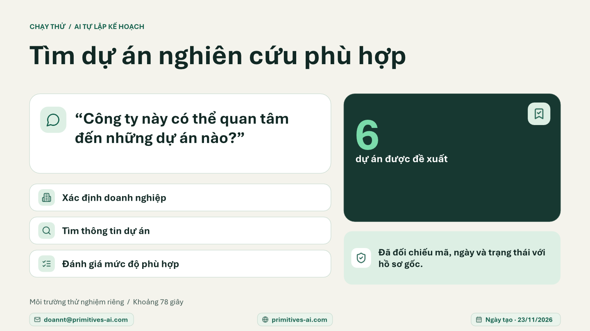
04 · Tìm dự án nghiên cứu phù hợp
Kích thước đầy đủVăn bản trên trang
CHẠY THỬ / AI TỰ LẬP KẾ HOẠCH
Tìm dự án nghiên cứu phù hợp
“Công ty này có thể quan tâm đến những dự án nào?”
Xác định doanh nghiệp
Tìm thông tin dự án
Đánh giá mức độ phù hợp
6
dự án được đề xuất
Đã đối chiếu mã, ngày và trạng thái với hồ sơ gốc.
Môi trường thử nghiệm riêng / Khoảng 78 giây
doannt@primitives-ai.com
primitives-ai.com
Ngày tạo · 23/11/2026

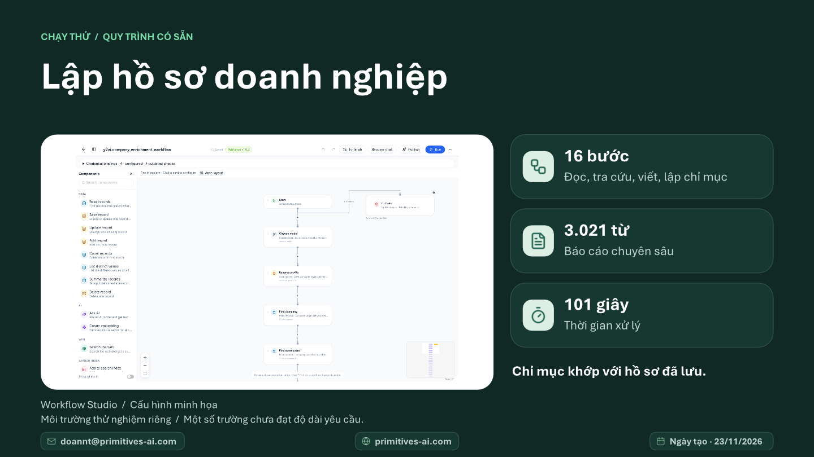
05 · Lập hồ sơ doanh nghiệp
Kích thước đầy đủVăn bản trên trang
CHẠY THỬ / QUY TRÌNH CÓ SẴN
Lập hồ sơ doanh nghiệp
Workflow Studio / Cấu hình minh họa
16 bước
Đọc, tra cứu, viết, lập chỉ mục
3.021 từ
Báo cáo chuyên sâu
101 giây
Thời gian xử lý
Chỉ mục khớp với hồ sơ đã lưu.
Môi trường thử nghiệm riêng / Một số trường chưa đạt độ dài yêu cầu.
doannt@primitives-ai.com
primitives-ai.com
Ngày tạo · 23/11/2026

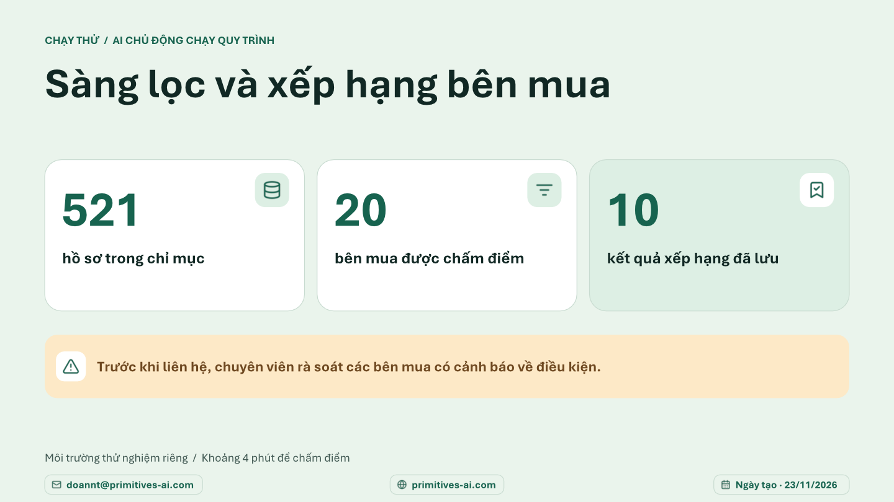
06 · Sàng lọc và xếp hạng bên mua
Kích thước đầy đủVăn bản trên trang
CHẠY THỬ / AI CHỦ ĐỘNG CHẠY QUY TRÌNH
Sàng lọc và xếp hạng bên mua
521
hồ sơ trong chỉ mục
20
bên mua được chấm điểm
10
kết quả xếp hạng đã lưu
Trước khi liên hệ, chuyên viên rà soát các bên mua có cảnh báo về điều kiện.
Môi trường thử nghiệm riêng / Khoảng 4 phút để chấm điểm
doannt@primitives-ai.com
primitives-ai.com
Ngày tạo · 23/11/2026

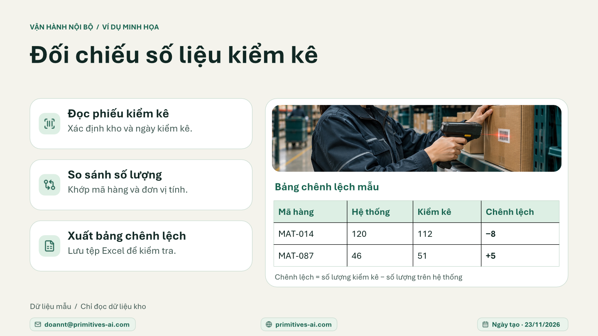
07 · Đối chiếu số liệu kiểm kê
Kích thước đầy đủVăn bản trên trang
VẬN HÀNH NỘI BỘ / VÍ DỤ MINH HỌA
Đối chiếu số liệu kiểm kê
Đọc phiếu kiểm kê
Xác định kho và ngày kiểm kê.
So sánh số lượng
Khớp mã hàng và đơn vị tính.
Xuất bảng chênh lệch
Lưu tệp Excel để kiểm tra.
Bảng chênh lệch mẫu
Mã hàng
Hệ thống
Kiểm kê
Chênh lệch
MAT-014
120
112
−8
MAT-087
46
51
+5
Chênh lệch = số lượng kiểm kê − số lượng trên hệ thống
Dữ liệu mẫu / Chỉ đọc dữ liệu kho
doannt@primitives-ai.com
primitives-ai.com
Ngày tạo · 23/11/2026

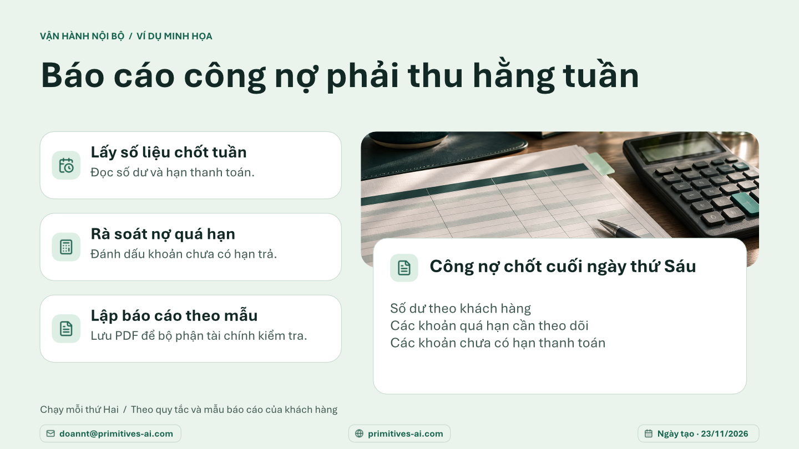
08 · Báo cáo công nợ phải thu hằng tuần
Kích thước đầy đủVăn bản trên trang
VẬN HÀNH NỘI BỘ / VÍ DỤ MINH HỌA
Báo cáo công nợ phải thu hằng tuần
Lấy số liệu chốt tuần
Đọc số dư và hạn thanh toán.
Rà soát nợ quá hạn
Đánh dấu khoản chưa có hạn trả.
Lập báo cáo theo mẫu
Lưu PDF để bộ phận tài chính kiểm tra.
Công nợ chốt cuối ngày thứ Sáu
Số dư theo khách hàng
Các khoản quá hạn cần theo dõi
Các khoản chưa có hạn thanh toán
Chạy mỗi thứ Hai / Theo quy tắc và mẫu báo cáo của khách hàng
doannt@primitives-ai.com
primitives-ai.com
Ngày tạo · 23/11/2026

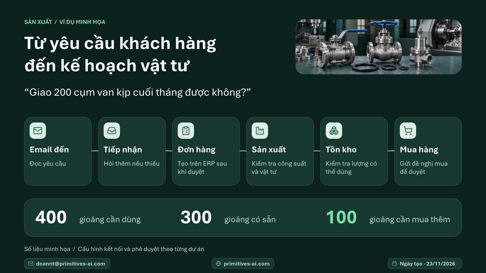
09 · Từ yêu cầu khách hàng đến kế hoạch vật tư
Kích thước đầy đủVăn bản trên trang
SẢN XUẤT / VÍ DỤ MINH HỌA
Từ yêu cầu khách hàng
đến kế hoạch vật tư
“Giao 200 cụm van kịp cuối tháng được không?”
Email đến
Đọc yêu cầu
Tiếp nhận
Hỏi thêm nếu thiếu
Đơn hàng
Tạo trên ERP sau khi duyệt
Sản xuất
Kiểm tra công suất và vật tư
Tồn kho
Kiểm tra lượng có thể dùng
Mua hàng
Gửi đề nghị mua để duyệt
400
gioăng cần dùng
300
gioăng có sẵn
100
gioăng cần mua thêm
Số liệu minh họa / Cấu hình kết nối và phê duyệt theo từng dự án
doannt@primitives-ai.com
primitives-ai.com
Ngày tạo · 23/11/2026

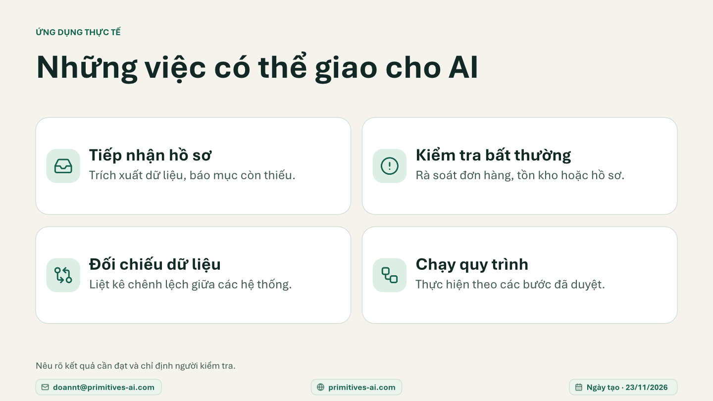
10 · Những việc có thể giao cho AI
Kích thước đầy đủVăn bản trên trang
ỨNG DỤNG THỰC TẾ
Những việc có thể giao cho AI
Tiếp nhận hồ sơ
Trích xuất dữ liệu, báo mục còn thiếu.
Kiểm tra bất thường
Rà soát đơn hàng, tồn kho hoặc hồ sơ.
Đối chiếu dữ liệu
Liệt kê chênh lệch giữa các hệ thống.
Chạy quy trình
Thực hiện theo các bước đã duyệt.
Nêu rõ kết quả cần đạt và chỉ định người kiểm tra.
doannt@primitives-ai.com
primitives-ai.com
Ngày tạo · 23/11/2026

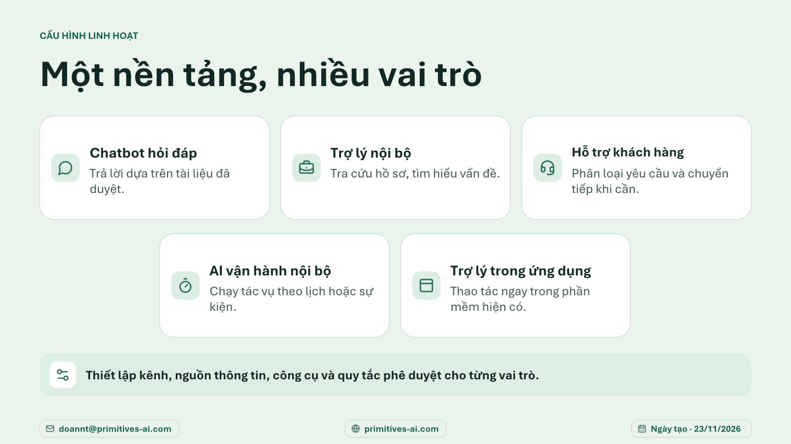
11 · Một nền tảng, nhiều vai trò
Kích thước đầy đủVăn bản trên trang
CẤU HÌNH LINH HOẠT
Một nền tảng, nhiều vai trò
Chatbot hỏi đáp
Trả lời dựa trên tài liệu đã duyệt.
Trợ lý nội bộ
Tra cứu hồ sơ, tìm hiểu vấn đề.
Hỗ trợ khách hàng
Phân loại yêu cầu và chuyển tiếp khi cần.
AI vận hành nội bộ
Chạy tác vụ theo lịch hoặc sự kiện.
Trợ lý trong ứng dụng
Thao tác ngay trong phần mềm hiện có.
Thiết lập kênh, nguồn thông tin, công cụ và quy tắc phê duyệt cho từng vai trò.
doannt@primitives-ai.com
primitives-ai.com
Ngày tạo · 23/11/2026

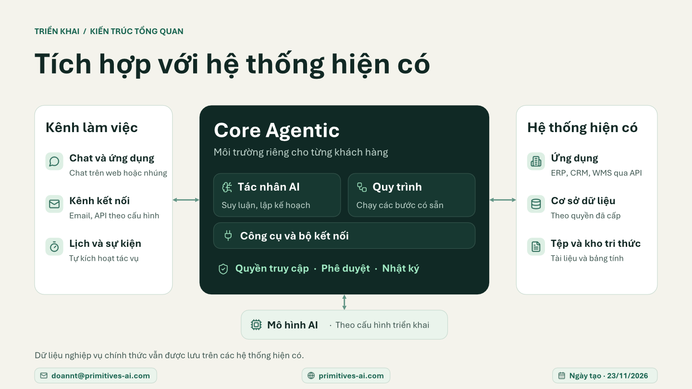
12 · Tích hợp với hệ thống hiện có
Kích thước đầy đủVăn bản trên trang
TRIỂN KHAI / KIẾN TRÚC TỔNG QUAN
Tích hợp với hệ thống hiện có
Kênh làm việc
Chat và ứng dụng
Chat trên web hoặc nhúng
Kênh kết nối
Email, API theo cấu hình
Lịch và sự kiện
Tự kích hoạt tác vụ
Hệ thống hiện có
Ứng dụng
ERP, CRM, WMS qua API
Cơ sở dữ liệu
Theo quyền đã cấp
Tệp và kho tri thức
Tài liệu và bảng tính
Core Agentic
Môi trường riêng cho từng khách hàng
Tác nhân AI
Suy luận, lập kế hoạch
Quy trình
Chạy các bước có sẵn
Công cụ và bộ kết nối
Quyền truy cập · Phê duyệt · Nhật ký
Mô hình AI
· Theo cấu hình triển khai
Dữ liệu nghiệp vụ chính thức vẫn được lưu trên các hệ thống hiện có.
doannt@primitives-ai.com
primitives-ai.com
Ngày tạo · 23/11/2026

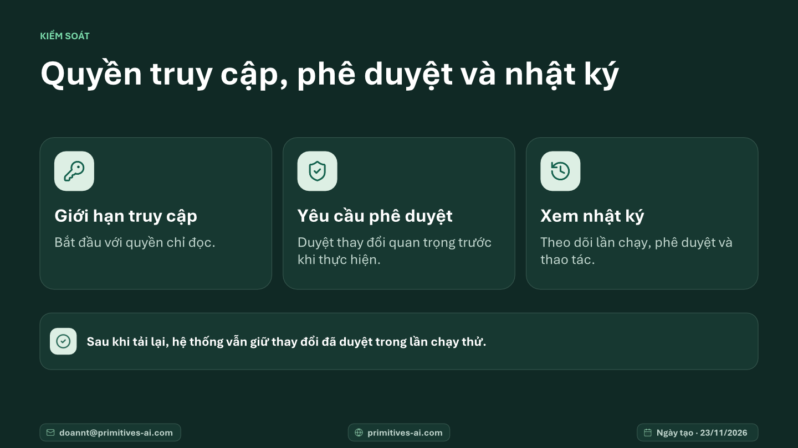
13 · Quyền truy cập, phê duyệt và nhật ký
Kích thước đầy đủVăn bản trên trang
KIỂM SOÁT
Quyền truy cập, phê duyệt và nhật ký
Giới hạn truy cập
Bắt đầu với quyền chỉ đọc.
Yêu cầu phê duyệt
Duyệt thay đổi quan trọng trước khi thực hiện.
Xem nhật ký
Theo dõi lần chạy, phê duyệt và thao tác.
Sau khi tải lại, hệ thống vẫn giữ thay đổi đã duyệt trong lần chạy thử.
doannt@primitives-ai.com
primitives-ai.com
Ngày tạo · 23/11/2026

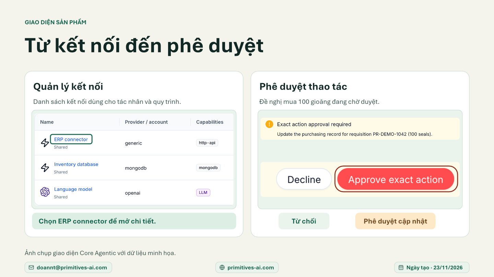
14 · Từ kết nối đến phê duyệt
Kích thước đầy đủVăn bản trên trang
GIAO DIỆN SẢN PHẨM
Từ kết nối đến phê duyệt
Quản lý kết nối
Danh sách kết nối dùng cho tác nhân và quy trình.
Phê duyệt thao tác
Đề nghị mua 100 gioăng đang chờ duyệt.
Ảnh chụp giao diện Core Agentic với dữ liệu minh họa.
doannt@primitives-ai.com
primitives-ai.com
Ngày tạo · 23/11/2026
Chọn ERP connector để mở chi tiết.
Từ chối
Phê duyệt cập nhật

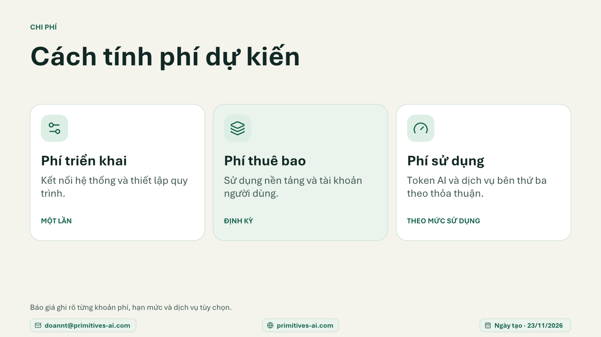
15 · Cách tính phí dự kiến
Kích thước đầy đủVăn bản trên trang
CHI PHÍ
Cách tính phí dự kiến
Phí triển khai
Kết nối hệ thống và thiết lập quy trình.
MỘT LẦN
Phí thuê bao
Sử dụng nền tảng và tài khoản người dùng.
ĐỊNH KỲ
Phí sử dụng
Token AI và dịch vụ bên thứ ba theo thỏa thuận.
THEO MỨC SỬ DỤNG
Báo giá ghi rõ từng khoản phí, hạn mức và dịch vụ tùy chọn.
doannt@primitives-ai.com
primitives-ai.com
Ngày tạo · 23/11/2026

16 · Thử nghiệm
Kích thước đầy đủVăn bản trên trang
Thử nghiệm
Bắt đầu với một nhóm và một việc định kỳ.
Chọn công việc
Chọn người phụ trách, ghi nhận hiện trạng.
Thử trên tình huống thực tế
Kiểm tra kết quả AI tạo ra.
So sánh kết quả
Đo thời gian, khối lượng làm lại và chi phí.
Hãy cùng chọn một công việc để bắt đầu.
doannt@primitives-ai.com
primitives-ai.com
Ngày tạo · 23/11/2026